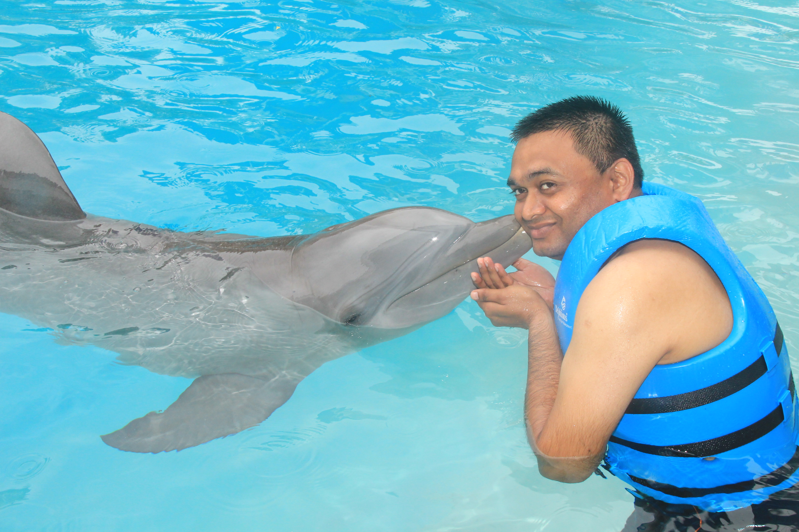

 I am Sagar. I was born and brought up in Anand city. It is a small town in the western India. I completed my schooling from here. I have a Bachelor of Engineering Degree in Electronics and Communication.
After completion of my College, I moved to London. I started helping my Uncle in his small business. Soon after, I got a job as a Technical Engineer in a Small company just outside of London Metro. I worked there for nearly 6 years until I moved to US. Mid of Nov. 2012, I moved to Lenexa, Kansas and I am here since. I currently work at Garmin International as a Software Quality Analyst.
I am married and I have 2 daughters of age 4 and 2 respectively. My wife is a full time employee and works in a small manufacturing company in Lenexa.